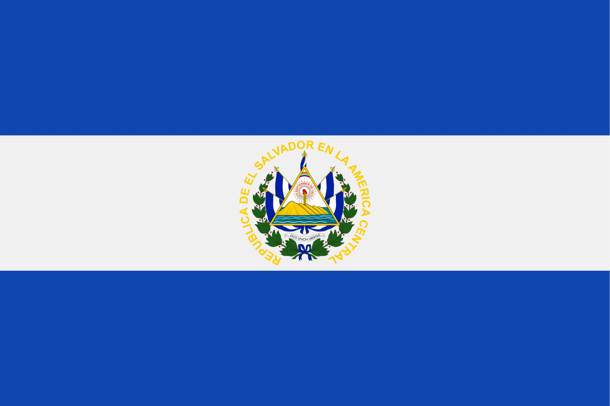

Ernesto Zeledon
About Me
My name is Ernesto Zeledon. I was born in El Salvador, and the same country where I am currently living. I work as an Client Experience Specialist in the Telecom industry. I have previous experience as a Technical Support agent, troubleshooting Software (Apps) and Network issues.
San Miguel, El Salvador

El Salvador is the smallest country in the Central America region, with an area of 21,041 km2 or 8,124 mi2. The most famous typical dish are Pupusas, that you can have alongside a refreshingly cold Horchata.